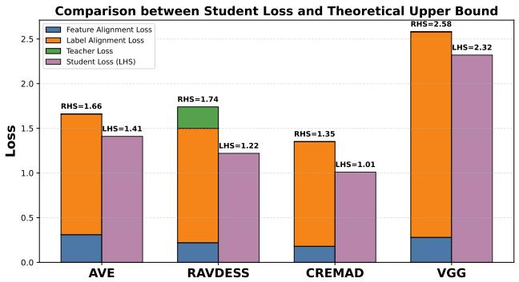

Cross-Modal Knowledge Distillation without Paired Data Trong Khiem Tran, Anh Duc Chu, Quang Hung Pham, Phi Le Nguyen, Trong Nghia Hoang；机构信息未在 arXiv 元数据中列出。 arXiv 新增 原文链接
Figureure 1 · Overview of our UCMKD framework: The teacher and student encoders map Figure 1. Overview of our UCMKD framework: The teacher and student encoders map inputs from different modalities into a shared latent space Z. The cross-modal generalization bound decomposes into two distributional quantities: Feature Alignment, a Wasserstein distance between the latent distributions $\mathcal { D } ^ { T } ( z )$ and $\mathcal { D } ^ { S } ( z )$ – Section 3.1; and Label Alignment, a distance measure between the induced predictive distributions $p _ { T } ( y \mid z )$ and $p _ { S } ( y \mid z ) - \xi$ ection 3.2. Theorems 2.6 and 2.7 bound the student’s generalized error by the sum of teacher error, feature alignment, and label alignment, motivating distribution-level alignment without sample-level pairing.这张图概括 Cross-Modal Knowledge Distillation without Paired 的整体方法流程。阅读时先看模块之间传递的训练信号，再看作者如何把目标拆成可优化的子问题。

Figureure 3 · Informativeness of the theoretical bound across the AVE, RAVDESS, CREMFigure 3. Informativeness of the theoretical bound across the AVE, RAVDESS, CREMA-D, and VGGSound datasets. The proposed bound remains reasonably tight with an average gap of 24.5%.这张图来自论文 PDF 的结构化抽取。当前用于辅助理解 Cross-Modal Knowledge Distillation without Paired 的方法或实验，请结合正文精读段落一起看。